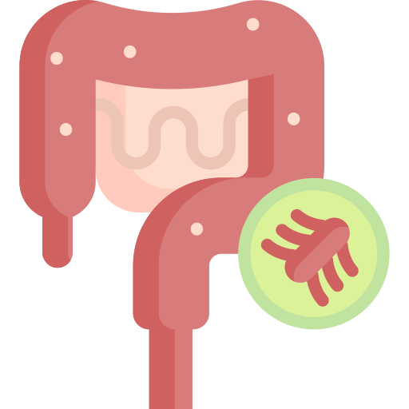

 腸病毒
成因
腸病毒泛指多種類病毒的總稱，包含小兒麻痺病毒、克沙奇病毒、伊科病毒及腸病毒等種類，總共有數十種以上，腸病毒 71 型最容易導致嚴重的併發症。而腸病毒常會經由腸胃道或是呼吸道傳染，在新生兒中可能過胎盤傳染，在發病的數天前就可以在糞口發現病毒，此時病毒就已具有傳染力了。50% 以上在感染的成人身上，只有類似上呼吸道感染的輕微咳嗽、流鼻水等症狀，常常被輕忽而傳播給家中長輩和小孩。以年齡層分析，5 歲以下幼童約佔所有重症病例 90%；在死亡病例方面，也是 5 歲以下幼童居多。
症狀
疱疹性咽峽炎、手足口病、肌肋痛、發燒合併皮疹食慾不佳、活動力下降、躁動不安、皮膚出現紅疹、腹瀉或嘔吐等，病況進展嚴重時可引發心肌炎、肝炎、腦炎、新生兒敗血症。
治療
大多採支持性療法，腸病毒感染症目前沒有特效藥，除了小兒麻痺病毒有研發疫苗外，其他腸病毒感染只能採取症狀支持療法，支持性療法是依照症狀的不同，給予不同的治療，像是發燒即會給予解熱鎮痛藥物，而大多的孩童能在7~10天自行好轉，只有少數患者會出現嚴重的併發症。譬如發燒者給退燒，腹瀉、嘔吐、口腔潰瘍而吃不下者，採靜脈注射液補充等，大多數在發病後 7-10 天內慢慢痊癒，僅少數會出現嚴重併發症。
預防
最佳方法為養成良好個人衛生習慣如，養成正確洗手濕、搓、沖、捧、擦五步驟，且要注意環境衛生及通風，而腸病毒流行期間儘量避免出入公共場所，不要與疑似病患接觸，且須注意營養、均衡飲食、運動及充足睡眠，以增強個人的免疫力，幼童（尤其三歲以下幼兒）有較高比率併發腦炎、類小兒麻痺症候群或肺水腫等嚴重症狀，因此幼童之照顧者或接觸者應特別注意個人衛生，避免將病毒傳染幼童。此外餵食母乳，也可以提高嬰兒抵抗力。
影片介紹
參考資料
張鑾英、李宜芸（2023）．腸病毒71型疫苗上市，該帶孩子施打嗎？．好健康，(65)，18-21。https://www-airitilibrary-com.autorpa.ntunhs.edu.tw:8443/Article/Detail?DocID=P20240429002-N202405210005-00006
陳淑麗（2020）．健康Q&A～認識腸病毒，拒絕腸病毒的威脅。彰基院訊，37(5)，26-27。https://www-airitilibrary-com.autorpa.ntunhs.edu.tw:8443/Article/Detail?DocID=P20140814001-202005-202007090010-202007090010-26-27
臺南市政府衛生局(2023年6月3日)．腸病毒介紹。https://health.tainan.gov.tw/page.asp?orcaid=8BB212F8-64AA-4A14-B055-0AF6B58D2AEC
衛生福利部疾病管制署(2003年8月18日)．預防腸病毒感染，個人衛生最重要。https://www.cdc.gov.tw/Category/ListContent/xdiZ0NuS67snzX0a7DGUHg?uaid=DpYX86zF4RU8wtiyvaGkyQ